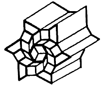

Pascal is an imperative and procedural programming language designed for teaching students structured programming.
My main interest in the language is building little Macintosh applications such as graf3dscene, and exploring the THINK Pascal 4.0.2 environment. I have saved many example files in the Macintosh Cookbook repository.

THINK Pascal is a development system for the Macintosh, released by Think Technologies in 1986 as Lightspeed Pascal. Think Technologies was bought by Symantec, and the name was changed to Think Pascal. The last official update came 1992, and the product was officially discontinued in 1997.
Styleguide
A project should include the Runtime.lib library containing all standard Pascal routines such as writeln and sqrt. The interface.lib library contains the glue code for the all Macintosh Toolbox. Since routines from these two libraries are commonly used in almost all Pascal programs on the Macintosh, they are automatically included in the project file.
The standard adopted here concerns the naming of procedures, functions, and variables which both always start with an uppercase letter. Each new word within a name should also start with an uppercase letter. For example, GetNewWindow or SeekSpindle are fine function and procedure names; badPrcName isn't.
Variables always start with a lowercase letter. Use variable names like firstEmployee and currentTime. Global variables(variables accessible to your entire program) should start with a lowercase "g", like gCurrentWindow and gDone. The use of variable names such as glk and swpCk7 is discouraged.
program Example;
{Comment}
var
name: STRING;
begin
ShowText;
name := 'alice';
if (name = 'alice') then
Writeln('The name is alice.')
else if (a = 'bob') then
Writeln('The name is bob.')
else
Writeln('The name is not alice nor bob.');
end.
Creating a procedure
A procedure definition in Pascal consists of a header, local declarations and a body of the procedure. The procedure header consists of the keyword procedure and a name given to the procedure. A procedure does not return anything.
program ExampleProcedure; procedure DrawLine (x1, y1, x2, y2: INTEGER); begin Moveto(x1, y1); Lineto(x2, y2); end; begin ShowDrawing; DrawLine(20, 20, 100, 100); end.
Creating a function
A function declaration tells the compiler about a function's name, return type, and parameters. A function definition provides the actual body of the function.
program ExampleFunction;
function Add (a, b: INTEGER): INTEGER;
begin
add := a + b;
end;
begin
ShowText;
Writeln('5+6=', Add(5, 6));
end.
Creating a type
An Object is a special kind of record that contains fields like a record; however, unlike records, objects contain procedures and functions as part of the object. These procedures and functions are held as pointers to the methods associated with the object's type.
program ExampleType;
type
Rectangle = object
width, height: INTEGER;
end;
var
r1: Rectangle;
begin
ShowText;
New(r1);
r1.width := 12;
r1.height := 34;
Writeln('The rect is ', r1.width : 2, 'x', r1.height : 2);
end.
Creating a type with a method
program ExampleMethod;
type
Rectangle = object
width, height: INTEGER;
procedure setwidth (w: INTEGER);
end;
var
r1: Rectangle;
procedure Rectangle.setwidth (w: INTEGER);
begin
width := w;
end;
begin
ShowText;
New(r1);
r1.width := 12;
r1.height := 34;
Writeln('The rect was ', r1.width : 2, ' x ', r1.height : 2);
r1.setWidth(56);
Writeln('The rect is now ', r1.width : 2, ' x ', r1.height : 2);
end.
Creating a unit
To include the unit in another project, add uses ExampleUnit right after program Example, the procedures declared in the interface will become available.
unit ExampleUnit; interface procedure DrawLine (x1, y1, x2, y2: INTEGER); implementation procedure DrawLine (x1, y1, x2, y2: INTEGER); begin Moveto(x1, y1); Lineto(x2, y2); end; end.
Console Program
program ExampleConsole;
const
message = ' Welcome to the world of Pascal ';
type
name = STRING;
var
firstname, surname: name;
begin
ShowText;
Writeln('Please enter your first name: ');
Readln(firstname);
Writeln('Please enter your surname: ');
Readln(surname);
Writeln;
Writeln(message, ' ', firstname, ' ', surname);
end.
GUI Program
program ExampleGUI;
var
w: WindowPtr; {A window to draw in}
r: Rect; {The bounding box of the window}
begin
SetRect(r, 50, 50, 200, 100);
w := NewWindow(nil, r, '', true, plainDBox, WindowPtr(-1), false, 0);
SetPort(w);
MoveTo(5, 20);
DrawString('Hello world!');
while not Button do
begin
end;
end.
Graphics Primitives
Graphical user interface design rests firmly on the foundation of OOP and illustrates its power and elegance.
| Object | Pascal | Description |
| Pen | PenSize(width, height:INTEGER) | Sets the size of the plotting pen, in pixels |
| Pen- move absolute | MoveTo(h,v: INTEGER) | Moves pen (invisibly) to pixel (h,v) (absolute coordinates) |
| Pen- move relative | Move(dh,dv: INTEGER) | Moves pen (invisibly) dh pixels horizontally and dv pixels vertically (relative coordinates) |
| Point | DrawLine(x1,y1, x1,y1:INTEGER) | Draws a line from point (x1,y1) to the second point, (x1,y1), i.e. a point |
| Point | MoveTo(x1,y1: INTEGER) Procedure LineTo(x1,y1: INTEGER) |
Moves to pixel (x1,y1) and draws a line to (x1,y1), i.e. a point |
| Point | Line(dx,dy: INTEGER) | From the present position of the pen, draw a line a distance (0,0) |
| Line - absolute | DrawLine(x1,y1, x2,y2:INTEGER) | Draws a line from point (x1,y1) to the second point, (x2,y2) |
| Line - absolute | MoveTo(x1,y1: INTEGER) Procedure LineTo(x2,y2: INTEGER) |
Moves to pixel (x1,y1) and draws a line to (x2,y2) |
| Line - relative | Line(dx,dy: INTEGER) | Draw a line a distance (dx,dy) relative to the present pen position |
| Text | WriteDraw(p1) | The WriteLn equivalent procedure for the drawing window |
| Drawing Window | Procedure ShowDrawing | Opens the Drawing Window |
Graphic Primitives Example
program Primitives;
{Program to demonstrate Pascal point & line primitives.}
begin
ShowDrawing; {Opens Drawing Window}
{First draw three points by three different functions}
PenSize(1, 1); {Sets pen size to 1 x 1 pixels}
DrawLine(50, 50, 50, 50);
WriteDraw(' Point at (50,50) using DrawLine');
PenSize(2, 2);
MoveTo(100, 75); {Absolute move}
LineTo(100, 75);
WriteDraw(' Point at (100,75) using LineTo');
PenSize(3, 3);
MoveTo(150, 100); {Absolute move}
Line(0, 0);
WriteDraw(' Point at (150,100) using Line');
{Now Draw three lines by three different functions}
MoveTo(150, 175); {Absolute move}
WriteDraw('Line drawn with DrawLine');
DrawLine(150, 125, 50, 225);
PenSize(2, 2);
Move(0, 25); {Relative move}
LineTo(150, 250);
WriteDraw('Line drawn by LineTo');
Pensize(1, 1);
Move(0, 25); {Relative move}
Line(-100, 50);
WriteDraw('Line drawn by Line');
end.
Graphics Primitives - Geometric Figures
| Rectangles (Squares) |
Ovals (Circles) |
Rounded-Corner Rectangles |
Arcs and Wedges |
|
| Frame | ProcedureFrameRect(r:Rect) | ProcedureFrameOval(r:Rect) | Frame Round Rect (r:Rect; ovalWidth, ovalHeight:Integer) | FrameArc (r:Rect;startAngle, arcAngle:Integer) |
| Paint | PaintRect(r:Rect) | PaintOval(r:Rect) | Paint Round Rect(r:Rect; ovalWidth, ovalHeight:Integer) | PaintArc (r:Rect;startAngle, arcAngle:Integer) |
| Erase | EraseRect(r:Rect) | EraseOval(r:Rect) | Erase Round Rect(r:Rect; oval Width, ovalHeight:Integer) | EraseArc (r:Rect;startAngle, arcAngle:Integer) |
| Invert | InvertRect(r:Rect) | InvertOval(r:Rect) | Invert Round Rect(r:Rect; ovalWidth, ovalHeight:Integer) | InvertArc (r:Rect;startAngle, arcAngle:Integer) |
| Fill | FillRect(r:Rect, pat:Pattern) | FillOval(r:Rect,pat:Pattern) | FillRound Rect(r:Rect; ovalWidth, ovalHeight:Integer, pat:Pattern) | FillArc (r:Rect;startAngle, arcAngle:Integer, pat:Pattern) |
Spiral Pattern
program EulerSpiral; const l = 4; a = 11; var wx, wy, wa: real; i: INTEGER; procedure DrawLineAngle; var t: REAL; begin MoveTo(round(wx), round(wy)); t := wa * PI / 180; wx := wx + l * cos(t); wy := wy + l * sin(t); wa := wa + (i * a); LineTo(round(wx), round(wy)); end; begin wx := 100; wy := 300; i := 0; ShowDrawing; repeat DrawLineAngle; i := i + 1; until i > 20000; end.
Button Events
| Object | Pascal Syntax | Example Call | Description |
| Button | Function Button:Boolean | if Button then º elseº |
The Button function returns True if the mouse button is down; False otherwise |
| Button | Function StillDown: Boolean | if StillDown thenº elseº |
Returns True if the button is still down from the original press; False if it has been released or released and repressed (i.e., mouse event on event queue) |
| Button | Function WaitMouseUp:Boolean | if WaitMouseUp thenº elseº |
Same as StillDown, but removes previous mouse event from queue before returning False |
| Mouse cursor | GetMouse(var mouseLoc:Point) | GetMouse(p); | Returns the present mouse cursor position in local coordinates as a Point type |
| Pixel Value | Function GetPixel(h,v:point:Integer): Boolean | GetPixel(10,10); | Returns the pixel at position. |
| Keyboard | GetKeys(var theKeys:KeyMap) | GetKeys(key); | Reads the current state of the keyboard and returns a keyMap, a Packed Array[1..127] of Boolean |
| Clock | Function TickCount:LongInt | if TickCount<60 thenº | Returns the total amount of a 60th of a second since the computer was powered on. |
| Event | Function GetNextEvent (eventMask:Integer;var theEvent:EventRecord): Boolean |
if GetNextEvent(2,Rec) thenº elseº |
A logical function which returns True if an event of the requested type exists on the event queue; False otherwise. If True, it also returns a descriptive record of the event. (type, location, time, conditions, etc) |
Notes
A semi-colon is not required after the last statement of a block, adding one adds a "null statement" to the program, which is ignored by the compiler.
The programmer has the freedom to define other commonly used data types (e.g. byte, string, etc.) in terms of the predefined types using Pascal's type declaration facility, for example:
type byte = 0..255; signed_byte = -128..127; string = packed array[1..255] of char;
If you are using decimal (real type) numbers, you can specify the number of decimal places to show with an additional colon:
Writeln(52.234567:1:3);
The 'whole number' part of the real number is displayed as is, no matter whether it exceeds the first width (in this case 1) or not, but the decimal part is truncated to the number of decimal places specified in the second width. The previous example will result in 52.234 being written.
Patterns
The available patterns are:
- black
- dkgray
- gray
- ltgray
- white
The following Think Pascal commands will be useful to you in writing interactive graphics programs on the Macintosh. They are listed by type:
Window Commands
| ShowDrawing | Open the drawing window (if not already open) and make it the active window on the screen. Should be used when first draw to drawing window and anytime shift from text to drawing window. |
| ShowText | Similarly for the text window. |
| HideAll | Closes all Think Pascal windows on the screen. |
| SetDrawingRect(WindowRect) | Set Drawing Window to fit WindowRect |
| SetTextRect(WindowRect) | Set Text Window to fit WindowRect |
Writing words on the screen:
| Writeln('text') | Prints text to the Text Window and moves cursor to next line. |
| Writeln(INTEGER) | Prints INTEGER in the Text Window and moves cursor to next line. |
| Writeln(INTEGER : d ) | Prints INTEGER in the Text Window using at least d spaces and then moves cursor to next line. |
| Write('text') | Prints text to the Text Window but does not move cursor to next line. |
| WriteDraw('text') | Prints text to the Drawing Window, starting at the CP. The CP is left at the lower right corner of the last character drawn. |
Builtin Types
| Type | Records |
| Rect | left, top, right, bottom : INTEGER |
| Point | h, v : INTEGER |
Builtin Procedures
| SetPt(VAR pt : Point; h,v : INTEGER) | Make point, pt,with coords (h,v) |
| SetRect(VAR r : Rect; left, top, right, bottom : INTEGER) | Make rectangle with coords (left,top) and (right,bottom) as corners. |
| OffSetRect(VAR r : Rect; left, top : INTEGER) | Change rectangle to coords (left,top). |
| InSetRect(VAR r : Rect; right, bottom : INTEGER) | Change rectangle to coords (left,top). |
| Pt2Rect( pt1, pt2 : Point; dstRect : Rect); | Make rectangle with pt1 and pt2 as corners |
| PtInRect(pt:Point; r : Rect) : BOOLEAN; | Determine if pt is in the rectangle r. |
String Procedures
| NumToString(theNum: LongInt, theString: str255); | Converts a number to a string. |
| StringToNum(theString: str255, theNum: LongInt); | Converts a string to a number. |
| Concat(theString1, theString2, theString3, ..: string); | Combines strings. |
Bit Operations
| Band(n, i : longint) : boolean |
| Btst(n, i : longint) : boolean |
| Bxor(i, j : longint) : longint |
| Bor(n, i : longint) : longint |
| Bsl(n, i : longint) : longint |
| Bsr(n, i : longint) : longint |
Syntax
^Shapeis a type which is a pointer to the type ShapemyShape^takes a ^Shape and dereferences the pointer into a value@myShapetakes a Shape and captures its address, giving you a ^Shapevar myShapeShape is part of a argument declaration which means that the argument is passed as a reference, allowing the called procedure to modify it
Customization
If you are using THINK Pascal 4.0.2, as opposed to 4.5d4, the select all shortcut will be missing, and the default build shortcut will be ⌘G, instead of ⌘R. To change the menu shortcuts, open THINK Pascal with ResEdit, and add the missing shortcuts to the MENU resource. Remove the ⌘A shortcut from the Seach Again menu.
Going Further
The absolute best books on THINK Pascal are:
- Macintosh Pascal Programming Primer, Dave Mark & Cartwright Reed
- Programming in Macintosh and Think Pascal, Richard A. Rink & Vance B. Wisenbaker
- THINK Pascal: User Manual, Symantec. Inc
- Pascal Reference Manual, Apple Computer. Inc


incoming graf3dscene macintosh identity computer neralie